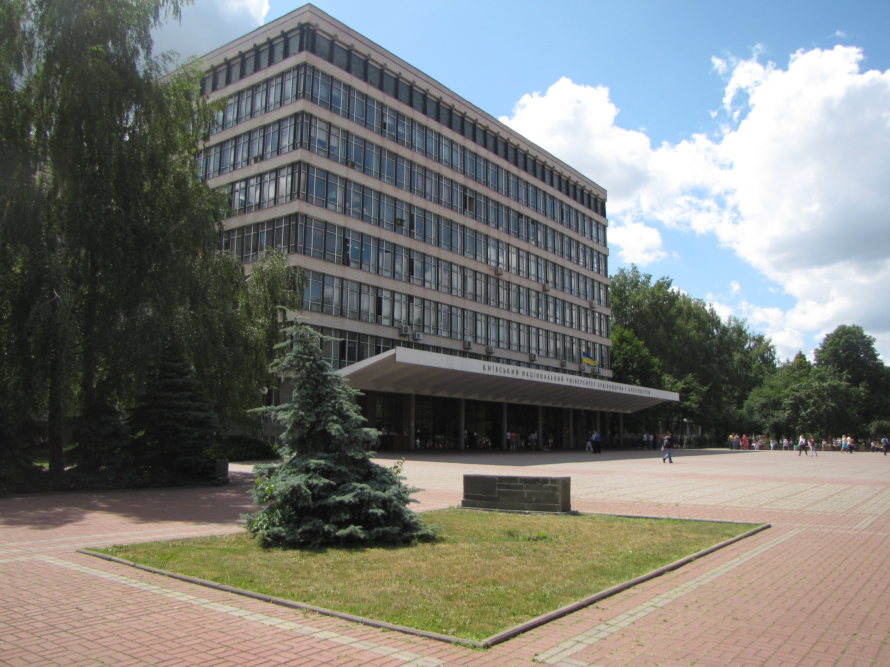

Архітектура та містобудування у КНУБА
КНУБА - Київський національний університет будівництва та архітектури. На данний момент це єдинний спеціалізований саме у цій галузі університет на території України. І тільки цей університет "визнають" за кордоном, принайні у Польщі. Саме учні КНУБА завжди займають призові місця у таких конкурсах як STEAL FREEDOM та подібних йому. Університет славиться високим рівнем знань та багатим портфоліо при завершинні 6 років навчання. Для вступу мені не потрібні бали нмт, зараховують лише за результатами творчого конкурса, який складається з 3-х предметів: креслення, композиція та рисунок. Саме до них я зараз активно готуюся, конкурс проходить вживу у самому університеті, часу на кожну роботу обмежено.
